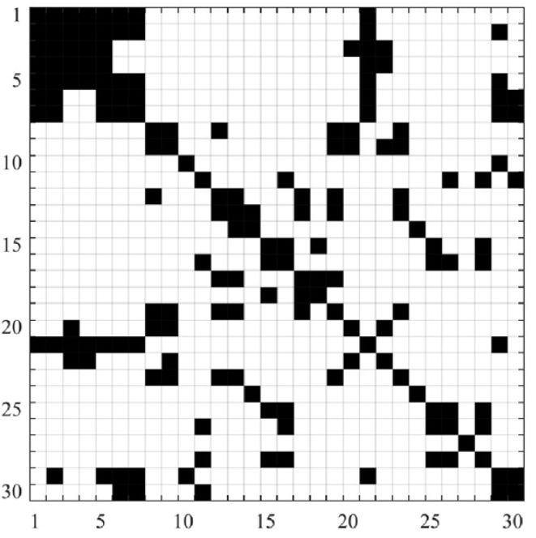

Support vector machine classification of brain states exposed to social stress test using EEG-based brain network measures
Biocybernetics and Biomedical Engineering, 39(1), pp.199-213, 2019. Journal Article

Abstract
Stress is one of the most significant health problems in the 21st century and should be dealt with due to the costs of primary and secondary cares of stress-associated psychological and psychiatric problems. In this study, the brain network states exposed to stress were monitored based on electroencephalography (EEG) measures extracted by complex network analysis. To this regard, 23 healthy male participants aged 18–28 were exposed to a stress test. EEG data and salivary cortisol level were recorded for three different conditions including before, right after and 20 min after exposure to stress. Then, synchronization likelihood (SL) was calculated for the set of EEG data to construct complex networks, which are scale reduced datasets acquired from multi-channel signals. These networks with weighted connectivity matrices were constructed based on original EEG data and also by using four different waves of the recorded signals including δ, θ, α and β. In addition to these networks with weighted connectivity, networks with binary connectivity matrices were also derived using threshold T. For each constructed network, four measures including transitivity, modularity, characteristic path length and global efficiency were calculated. To select the sensitive optimal features from the set of the calculated measures, compensation distance evaluation technique (CDET) was applied. Finally, multi-class support vector machine (SVM) was trained in order to classify the brain network states. The results of testing the SVM models showed that the features based on the original EEG, α and β waves have got better performances in monitoring the brain network states.